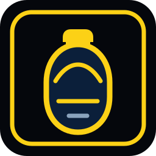
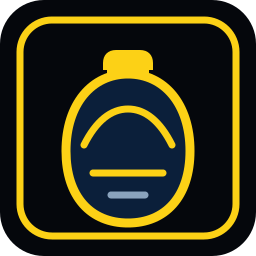

Risk Cut Shield
risk-cut-shield.svg
Symbolic marks for cutting risk before release. No literal violence, no blood, no human target.
risk-cut-shield.svg
evidence-s.svg
approval-gate.svg

canteen.svg

canteen-round.svg